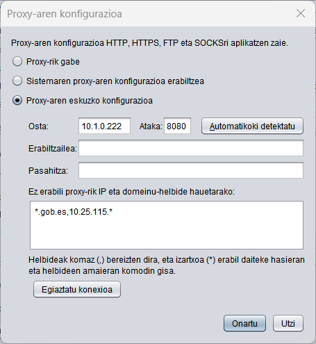

Proxy-aren konfigurazioa
Autofirmak hainbat arrazoirengatik sartu behar du Internetera, eta, beharrezkoa bada, sare-proxy bat konfiguratu behar da hori egiteko. Hauek dira Autofirmak sarera sartzeko eska ditzakeen helburuak:
- Sinadura tramiteak egiten diren web orriekin komunikatzea.
- Bilatu eguneratzeak (aukera gaituta badago bakarrik).
- Estatistikak bidali (aukera gaituta badago bakarrik).
Autofirmak egiten dituen sare-konexio guztiek hemen ezarritako proxy-konfigurazioa aplikatuko dute.

Hauek dira proxy-a konfiguratzeko aukerak:
- Proxy-rik gabe: Sare-konexioak zuzenean egingo dira.
- Sistemaren proxy-aren konfigurazioa: Aplikazioak URL bakoitzerako aplikatu beharreko konfigurazioa identifikatuko du, sistema eragilean eta/edo nabigatzailean ezarritako konfigurazioaren arabera. Baliteke konfigurazio hori Windowsen ezarritakoaren berdin-berdina ez izatea.
- Proxy-aren eskuzko konfigurazioa: Erabili beharreko proxy konfigurazio espezifikoa ezartzeko aukera ematen du. Hauek dira konfigura daitezkeen aukerak:
- Host-a: Proxy-aren domeinuaren edo IParen izena.
- Portua: Proxy-ra sartzeko ataka-zenbakia.
- Erabiltzailea: Proxy-ak autentifikazioa behar duenean erabili beharreko erabiltzaile-izena. Aukerakoa.
- Pasahitza: Proxy-ak autentifikazioa behar duenean erabili beharreko erabiltzaile-pasahitza. Aukerakoa.
- Ez erabili proxy-rik IP helbide eta domeinu-helbide hauetarako: Zuzenean sartu behar diren IP helbideen eta domeinu-izenen zerrenda (eskuz konfiguratutako proxy-tik pasatu gabe). Normalean, intranetaren barruan nahiz kanpoan dauden web-aplikazioetatik sinadura-eragiketak egitean lantzen diren intraneteko helbideak konfiguratuko dira hemen.
Helbideak komaz (,) bereizita idatziko dira, eta izartxoak (*) idatz daitezke komodin gisa, azpidomeinuak edo azpisare osoak identifikatzeko. Aukerakoa.
Horrez gain, aukera hauek ere eskaintzen dira:
- Nork bere burua detektatu: Sistemaren konfiguraziotik ateratzen ditu helbide generiko baterako erabili beharreko host eta ataka.
- Egiaztatu konexioa: Egiaztatu proxy-aren eskuzko konfigurazioa helbide generiko batera sartzeko.
Ezarritako konfigurazioa OK botoia sakatzean aplikatuko da. Utzi botoia sakatuz gero, leihoa itxiko da konfigurazioa aplikatu gabe.